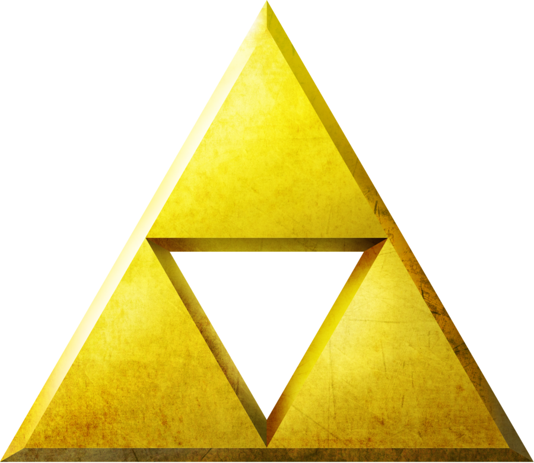
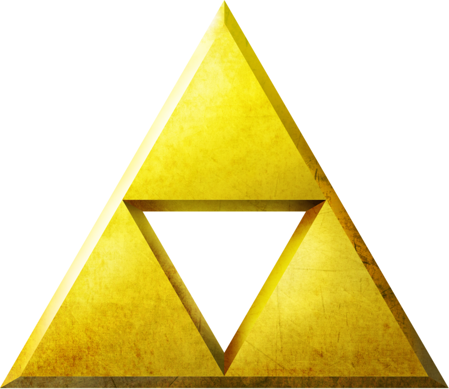

Triforce
Emblema de la Trifuerza
Compuesta de tres triángulos, es un símbolo del equilibrio entre los tres grandes poderes con los que las Diosas, Din, Nayru y Farore, crearon el mundo: poder, sabiduría y valor.
Emblema de la Trifuerza
Compuesta de tres triángulos, es un símbolo del equilibrio entre los tres grandes poderes con los que las Diosas, Din, Nayru y Farore, crearon el mundo: poder, sabiduría y valor.
The Hero of Time

Link, el héroe del tiempo, es un hyliano que esta predestinado a pelear junto a Zelda y enfrentarse a Ganon.